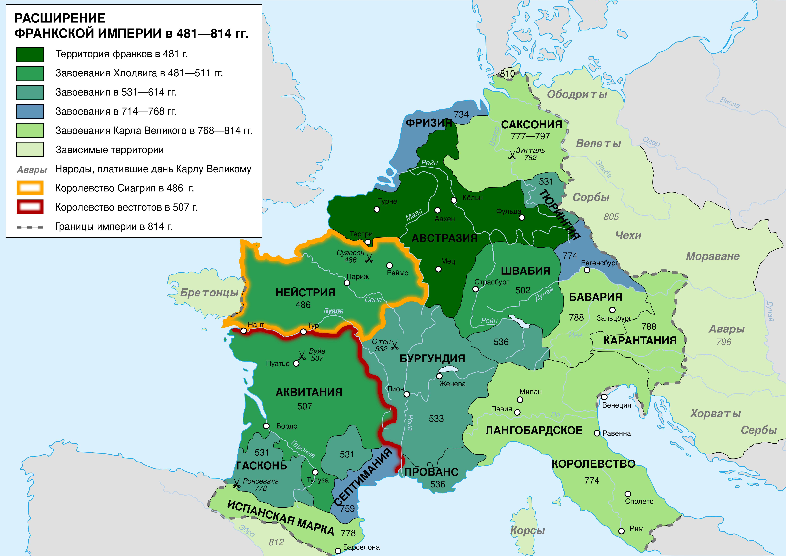
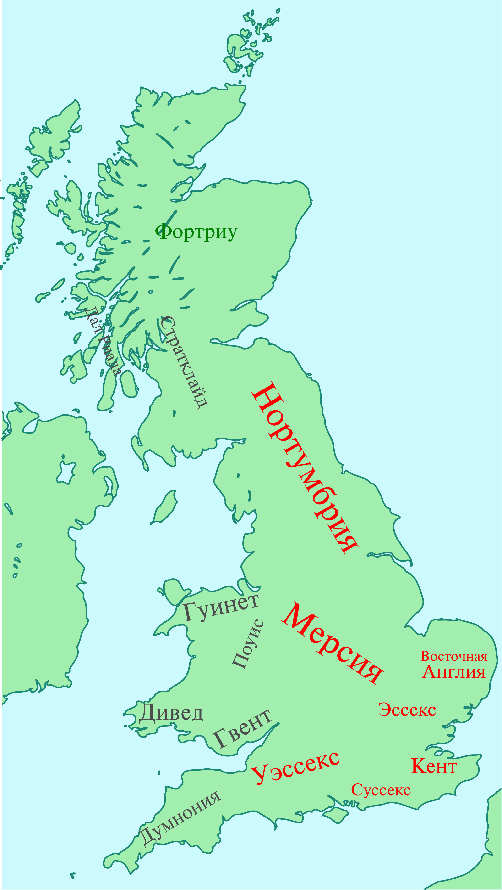
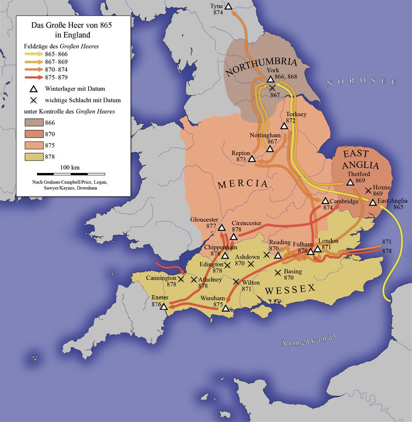
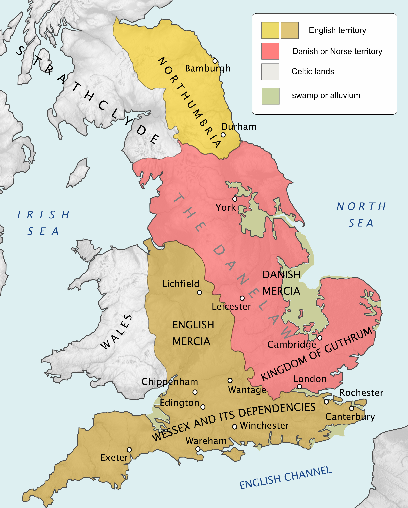
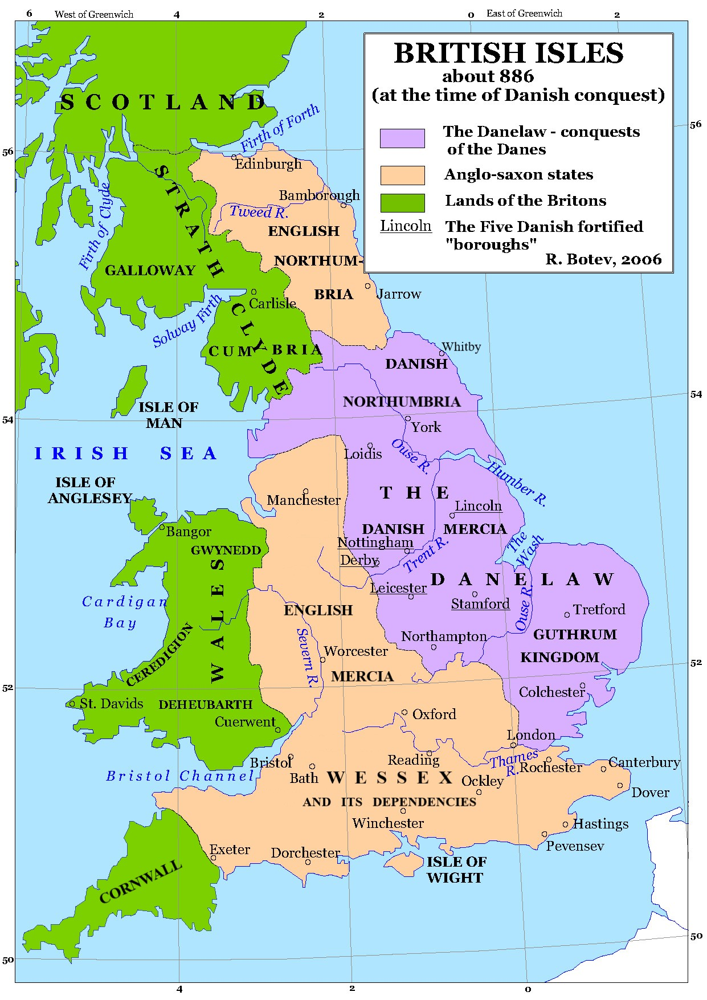
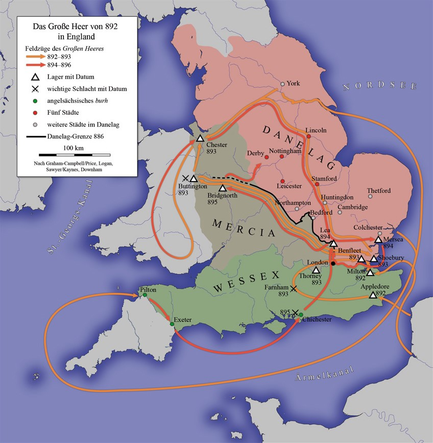

Перевод песен — одна из самых трудоёмких и сложных задач переводчика. От него требуется не только хорошее понимание языка-оригинала и отличное знание родного языка, но и наличие слуха, чувства ритма, навыков стихосложения. Важно правильно обозначить в тексте устойчивые словосочетания и фразы, использованные в переносном значении
Основатель империи Каролингов, «Отец Европы», впервые после падения Римской империи
объединивший бо́льшую часть Западной и Центральной Европы.
По имени Карла династия Пипинидов получила название Каролингов. От его имени,
возможно произошло славянское слово «король».
Карл Великий — старший сын Пипина Короткого и Бертрады Лаонской — стал королём франков в 768 году после смерти отца.
Первоначально правил совместно с братом Карломаном.
Наибольшего могущества Карл Великий достиг в 800 году, когда был коронован «императором римлян» папой Львом III
на Рождество в базилике Святого Петра в Риме.

Незадолго до смерти, в 813 году, Карл призвал к себе Людовика, единственного оставшегося в живых своего сына от Гильдегарды, и, созвав торжественное собрание знатных франков всего королевства, 11 сентября назначил его своим соправителем и наследником, а затем возложил ему на голову корону в Ахенском соборе и приказал впредь именовать его императором.
Первым из англосаксонских правителей Британии стал именовать себя королём Англии.
Благодаря придворному воспитанию, Альфред узнал языки и труды древних писателей.
Ещё ребёнком он по повелению отца совершил поездку в Рим (853 год), где папа римский Лев IV помазал его
как будущего короля Уэссекса. В 855 году вместе с отцом снова посетил Рим, а затем некоторое время жил при
дворе правителя Западно-Франкского королевства Карла Лысого.     
Англосаксы потерпели от данов несколько поражений, которым Альфреду пришлось уплатить дань. Заключённое перемирие избавило на время Кент и Уэссекс от набегов данов, но остальная Англия была завоевана викингами. Даны захватили и разграбили в 871 году город Лондон. 5 мая 878 года Альфред атаковал лагерь викингов. Предводитель данов, король Восточной Англии Гутрум вступил с Альфредом в переговоры. По заключённому миру Гутрум обязался покинуть Уэссекс и принять крещение.
В 1308 году Роберт III потребовал у парламента реституции графства Артуа. Суд, возглавляемый королём Филиппом IV Красивым, 9 октября 1309 года подтвердил права тётки Роберта графини Маго на Артуа. В 1329 году она умерла, а в начале 1330 года умерла и её дочь и наследница, Жанна I Бургундская. Возникли слухи, что обе они были отравлены по проискам Роберта. Документы, подтверждающие его права на графство Артуа, представленные Робертом, были подложными. Роберт в сентябре 1331 года покинул Париж. В 1334 год (или в конце 1336 года) он попросил убежища у английского короля Эдуарда III и получил его. Роберт активно подстрекал короля к войне с Францией, убеждая требовать французскую корону. В 1337 году между Англией и Францией началась Столетняя война. Роберт принимал активное участие в первых кампаниях Столетней войны. Роберт показал себя блестящим командиром, сумев спасти свою армию и вывести её к городу Эннебу, находившемуся в руках англичан. Вскоре после этого, в конце октября 1342 года он умер от потери крови в результате ранений.
Был самым богатым и влиятельным деятелем своего времени с обширными политическими связями, которые выходили за пределы страны. Одна из ключевых фигур в Войне Алой и Белой Роз, первоначально на стороне Йорков, но позже перешёл на сторону Ланкастеров. Заслужил прозвище «Делатель королей», так как сыграл важную роль в свержении двух королей: вначале короля Генриха VI из династии Ланкастеров, затем короля Эдуарда IV из династии Йорков.
Брак Эдуарда IV и Елизаветы Вудвилл привёл к тому, что Уорик утратил власть и влияние. Для Эдуарда этот брак вполне мог быть браком по любви, но в долгосрочной перспективе он стремился сделать из семьи Вудвиллов влиятельную династию, независимую от влияния Уорика. Уорик считал, что король Эдуард должен был заключить брачный союз с французской принцессой. Уорик обвинил Елизавету в том, что её мать Жакетта Люксембургская занималась колдовством. Погиб Уорика в битве при Барнете. Потерпев поражение, он попытался сбежать с поля боя, но был сброшен с лошади и убит.
Ри́чард III — король Англии с 1483 года из династии Йорков, последний представитель мужской линии Плантагенетов, боровшихся за английский трон в период войн Алой и Белой роз. В битве при Босворте (1485) потерпел поражение и был убит. Ричард в окружении восьмисот всадников королевской гвардии попытался врезаться в каре пехотинцев, окружавших Генриха Тюдора (будущего короля). Но, уже зарубив его знаменосца и находясь вблизи от самого Генриха, отряд Ричарда был отброшен неожиданным вмешательством лорда Стэнли, который бросил против Йорка более двух тысяч рыцарей. Если бы не это предательство, история Англии вполне могла пойти по другому пути. Люди Ричарда предложили королю своих лошадей, чтобы бежать, но он отказался. Когда все его рыцари пали, Ричард отбивался в одиночку, пока не был убит.
После проведённой генетической экспертизы, в феврале 2013 года было объявлено, что останки, найденные на месте автостоянки в Лестере, действительно принадлежали Ричарду III.
Вторая супруга короля Англии Генриха VIII Тюдора (с 25 января 1533 до 17 мая 1536 года), до замужества — маркиза Пембрук. Мать второй правящей королевы Англии, Елизаветы I Английской. Анна Болейн была коронована в качестве королевы-консорта (королева-супруга) 1 июня 1533 года в Вестминстерском аббатстве. В 1534 году парламент принял «Акт о супрематии», по которому Генрих был провозглашён главой Церкви Англии.
В день захоронения Екатерины Арагонской в соборе Питерборо у Анны произошёл выкидыш. Возможно, причиной этого стало то, что она сильно переживала за супруга, который за пять дней до этого на турнире упал с лошади и в течение нескольких часов после этого лежал без сознания, возможно, из-за нервного срыва, который произошёл, когда она увидела, что Джейн Сеймур сидит у короля на коленях. Мертворождённый ребёнок мужского пола стал началом конца королевского брака. На смертную казнь был вызван опытный палач-мечник из города Сент-Омер, Франция.
В народном предании — «королева девяти дней». Правнучка короля Генриха VII, дочь герцога Саффолка выросла в протестантской среде и получила превосходное для своего времени образование. При жизни короля Эдуарда VI, будучи четвёртой в очереди престолонаследия, она имела лишь призрачные шансы прийти к власти: наследницей короля-подростка была его старшая сестра Мария.
В 1553 году по настоянию регента Джона Дадли вышла замуж за его сына Гилфорда Дадли, несмотря на то, что Джейн была против этого брака. В июне 1553 года смертельно больной Эдуард и Джон Дадли отстранили католичку Марию от престолонаследия и назначили наследницей шестнадцатилетнюю протестантку Джейн. После смерти Эдуарда она была провозглашена королевой в Лондоне, а Мария возглавила вооружённый мятеж в Восточной Англии. Девять дней спустя Тайный совет, оценив соотношение сил, низложил Джейн и призвал на трон Марию. Джейн Грей и её муж были заключены в Тауэр, приговорены к смерти за измену и семь месяцев спустя обезглавлены.
Королева Франции с 1547 по 1559 год, супруга Генриха II, короля Франции из династии Валуа. Будучи матерью троих сыновей, занимавших французский престол в течение её жизни, она имела большое влияние на политику Королевства Франции. Некоторое время управляла страной в качестве регента.
На протяжении своего правления Генрих отстранял Екатерину от участия в государственных делах, заменяя её своей любовницей Дианой де Пуатье, которая обладала большим влиянием на него. Смерть Генриха в 1559 году вывела Екатерину на политическую арену в качестве матери пятнадцатилетнего короля Франциска II. Когда в 1560 году он умер, Екатерина стала регентом при десятилетнем сыне Карле IX. Принято считать, что Варфоломеевская ночь 24 августа 1572 года, во время которой тысячи гугенотов были убиты, была спровоцирована именно Екатериной Медичи. После того как в 1574 году умер Карл, Екатерина сохранила своё влияние в годы царствования своего третьего сына, Генриха III.
Король Франции с 1589 года (коронован в 1594). Первый представитель дома Бурбонов на французском престоле. По настоянию королевы Екатерины Медичи 18 августа 1572 года, в возрасте 18 лет, он женился в Париже на Маргарите Валуа — сестре короля Карла IX, известной также под именем королевы Марго. Права Генриха IV на трон были подтверждены Генрихом III, который, будучи смертельно ранен, приказал своим сторонникам присягать наваррскому монарху, однако стать королём Франции он смог только после длительной борьбы. Для того чтобы нейтрализовать своих соперников, 25 июля 1593 года Генрих Наваррский принял католицизм и уже 22 марта 1594 года вступил в Париж (по этому поводу Генриху IV приписывается высказывание «Париж стоит мессы»).
Для прекращения межконфессиональной вражды Генрих IV 13 апреля 1598 года подписал Нантский эдикт, даровавший свободу вероисповедания протестантам, вскоре после этого Гугенотские войны закончились. Был убит в Париже 14 мая 1610 года католическим фанатиком Франсуа Равальяком.
Французский государственный деятель, центральная фигура времён царствования Людовика XIII, кардинал Католической церкви (1622) фактически управлявший Францией в качестве первого министра (с 1624). Ришельё понимал, что главными врагами на международной арене являются габсбургские монархии Австрии и Испании. Но Франция ещё не была готова к открытому конфликту. Ришельё знал, что государству не хватает необходимых ресурсов для этого. Однако он отвергает союз с Англией в лице её премьер-министра герцога Бекингема, которого Ришельё считал шарлатаном и авантюристом.
Внутри страны Ришельё успешно раскрывает заговор против короля, направленный на устранение монарха и возведение на престол его младшего брата Гастона Орлеанского (избежал казни, но был лишён прав на регентство). В заговоре участвовали многие знатные вельможи и сама королева. Планировалось в том числе и убийство кардинала. Именно после этого случая у кардинала появляется личная охрана — гвардейцы кардинала.
Участник трёх революций: американской войны за независимость, Великой французской революции и июльской революции 1830 года. В сентябре 1776 года маркиз де Ла Файет узнал о начале восстания в североамериканских колониях и ознакомился с текстом Декларации независимости США, принятой 4 июля 1776 года Континентальным конгрессом молодой республики.
26 апреля 1777 года маркиз де Ла Файет с другими 15 французскими офицерами отплыл на корабле «Виктуар» из испанского порта Пасахес к берегам Америки. 15 июня 1777 года вместе со своими спутниками он ступил на американскую землю в бухте Джорджтауна близ города Чарлстон (штат Южная Каролина). 27 июля, преодолев 900 миль пути, прибыл в Филадельфию. Пост начальника штаба армии, полученный Ла Файетом от Конгресса, не имел практически реального значения и соответствовал, скорее, должности старшего адъютанта главнокомандующего Джорджа Вашингтона, с которым у Ла Файета со временем установились дружеские отношения.
Американский государственный и политический деятель, первый президент Соединённых Штатов Америки (1789—1797), один из отцов-основателей США, главнокомандующий Континентальной армией, участник войны за независимость и создатель американского института президентства.
После вооружённых столкновений с Великобританией Вашингтон был единогласно избран главнокомандующим Континентальной армией. Он руководил ею от осады Бостона в 1775 году до капитуляции английских войск у Йорктауна в 1781-м. В ноябре 1783 года, после заключения Парижского мирного договора, сложил свои полномочия и удалился в поместье Маунт-Вернон. Председательствовал на Конституционном съезде 1787 года, на котором были утверждены Конституция Соединённых Штатов и федеральное правительство. Вашингтон сыграл ключевую роль в принятии и ратификации Конституции. В 1789 году Джордж Вашингтон был единогласно избран первым президентом США, а в 1792 году его переизбрали на второй срок (также единогласно).